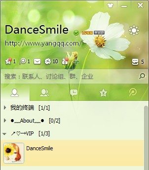
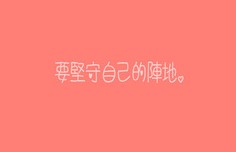

博客日记
这是我的个人博客，我的个人博客网站它不仅仅是我个人兴趣和爱好，还是我创业的起点。我爱网页设计，我爱写前端代码。它充实了我的生活，实现了我的目标和梦想。
-

顶【告别2018】耕耘才有所得，付出才有收获
网站模板我更新速度是很慢的，数了一下，大概12个模板，不多，但是每一套个人博客网站模板都是我精心设计的，期间认识了很多做优化的朋友还有客户，根据他们的要求还有建议，我又做了很多调整，无论是静态模板的编写还是后台调用方式上，都有很大的进步，我这一年的时间，比我7年加起来的收获还要多。
付出 收获 -
只属于雨天才有的心情
我爱雨天，但是也许是害怕雨天的忧郁，所以我愿天一直是晴朗的，不要给我怀念与想像的条件。这样的雨天，会为我点燃一支烛，给我些许暖意吗？我愿意静静地，守着这丝温暖，静静地看着雨不停
雨天 心情 -
12月的随想-你认为你是一个俗女吗
我问朋友：“你认为你是一个俗女吗？”朋友说：“我是个世俗的女人，俗，俗得很，俗不可耐，可我自己喜欢。当这个社会所有的女人都被称为美女的时候，淑女上等，俗女中等，你可
-
毕业后的那段时间
我又在恍恍惚惚的过日子了，没有刚开始毕业那会儿的雄心勃勃，没有那会儿找工作那点志气，随着时间的消失，我一天一天的就这样沉沦下去？买的公务员书，我居然抱着三分的热情看，这次面临
毕业 -

QQ在线——生活日记
打招呼的方式很多，也许一个“握手”，一朵“玫瑰”，一个“微笑”，就可以拉开话题，我最接受不了的是“你叫什么名字啊？”“你家在哪里啊?”“你在读书还是上班啊？”“你有没有男朋友啊？”....这些盘问式的对话，也许这次我给你说了，我们毕竟是在网络，你能记住吗？遇到同样一个网友再三问你同样的话题，包括姓名的时候，你是否也烦呢？
生活日记 -
遇见一个未知的你
听着那熟悉的歌曲 ­看着那一张张可爱的图片 ­读着我们共同欣赏的诗…… ­也许我们曾经相遇 ­ ­看着你远去的背影 ­沿着你来的方向 &sh
遇见 -

最后的午餐
昨晚上做梦了，我本不想记下，可是又怕这种似乎有点真实的感觉就这样溜走，枕头湿了...我也记不得我是在梦中哭过还是...... ­在一个小餐馆，男孩叫了一份鱼香茄子、麻婆豆腐,还
-

Just One Last Dance
《Just One Last Dance 》是一个朋友介绍给我听的，当时一听就喜欢上它了，直到现在，就像《因为是女子》一样，我空间的主打歌还挺多的，唯独这两首让我舍不得换掉......如果你听到这
-

爱情的背叛者
我宁愿自己是爱情的背叛者，那我就不用守候那个不真实的承诺！也不用为那个没有结果的爱情落泪！甚至是为了挽留而付出代价！ 为了爱情，放弃亲情、放弃友情，甚至是抛弃一切的，我只能说，
爱情 -
思源夜景
上学期间，去得最多的也就是思源广场，旁边还有图书馆，茶苑。周末约着三两个同学拍照，下午又逛街，一天时间就这样打打闹闹就度过了.
思源夜景

 支付宝收款码
支付宝收款码